pacman::p_load(ggstatsplot, plotly, DT, scales, tidyverse, readxl, SmartEDA, skimr, corrplot, readxl, ggdist, ggridges, ggthemes, colorspace, scales, nortest, easystats, tidymodels)Exploratory Data Analysis (EDA) and Confirmatory Data Analysis (CDA)
The goal of this exercise is to:
perform Exploratory Data Analysis (EDA) and Confirmatory Data Analysis (CDA) on the data sets namely Weather, Dengue Cases and Electricity Consumption.
based on the outcome of EDA and CDA to determine the parameters and outputs that will be exposed on the shiny applications and
to select appropriate Shiny UI components for exposing the parameters determine above
Data sets:
The following data sets were used for this exercise:
The climate data set was being scraped from Meteorological Service Website, Singapore using beautiful soup python package.
The scraped historical daily weather records in Singapore were then combined using python into one csv file and loaded in R Studio.
The dengue data sets were provided at the courtesy of the National Environment Agency (NEA), Singapore.
The data set is also publicly available on NEA website and Ministry of Health website.
Libraries:
The following libraries were used for this take home exercise.
Data Preparation Process:
The preliminary data preparation for the data sets were detailed in [project webpage] (https://isss608jan25group7.netlify.app/shiny/data_prep).
Using the pre-prepared data, this section will transform the weather data so that EDA and CDA could be performed in the subsequent steps.
For this part of the analysis, it will focus on the time period from 2014 to Jun 2024. This is to aligned to the availability of data time period from other data sets, the dengue data set is available from 2014 to 2024 and electricity consumption is available from 2005 to Jun 2024.
Hence the common period is from 2014 to June 2024. we would be using this common period.
Although the weather station at Changi has the most completed dataset,
Weather Data:
The following code chuck is to read the weather data.
weather <- read_rds('data/Ex03/rds/weather.rds')skim(weather)The list of the active weather stations are are found in this link: https://www.weather.gov.sg/wp-content/uploads/2024/08/Station_Records.pdf
Based on the above summary table, we noted that there are a lot of missing data. with reference to the weather stations data records, 16 weather stations were selected. The names of the selected weather stations were listed in the code chunk below.
filtered_weather <- filter(weather,
Date >= as.Date("2014-01-01") &
Date <= as.Date("2024-06-30") &
Station %in% c('Admiralty','Ang Mo Kio', 'Changi',
'Choa Chu Kang (south)', 'Clementi',
'East Coast Parkway', 'Jurong (West)',
'Marina Barrage','Newton',
'Paya Lebar', 'Sembawang',
'Pasir Panjang', 'Seletar',
'Tai Seng','Tengah','Tuas South'))%>%
filter(MinTemperature >= 15)Use summary function to view the filtered weather
summary (filtered_weather)The following code chunk is used to aggregate the data together at monthly dimension.
weather_Monthly <- filtered_weather %>%
group_by(Year, Month) %>%
summarize(
AvgMeanTemp = mean(MeanTemperature, na.rm = TRUE),
MaxTemp = max(MaxTemperature, na.rm = TRUE),
MinTemp = min(MinTemperature, na.rm = TRUE),
total_rainfall=sum(DailyRainfall,na.rm=TRUE),
Highest30minRainfall=max(Highest30minRainfall,na.rm=TRUE),
Highest60minRainfall=max(Highest60minRainfall, na.rm=TRUE),
Highest120minRainfall=max(Highest120minRainfall, na.rm=TRUE),
DaysAbove35 = sum(MaxTemperature >=35, na.rm = TRUE)
)The following code chuck is to aggregate the yearly data together.
2024 data are being dropped as the electricity consumption data for 2024 is incomplete
weather_Yearly <- filtered_weather %>%
group_by(Year) %>% # Group by Year only
summarize(
AvgMeanTemp = mean(MeanTemperature, na.rm = TRUE),
MaxTemp = max(MaxTemperature, na.rm = TRUE),
MinTemp = min(MinTemperature, na.rm = TRUE),
total_rainfall = sum(DailyRainfall, na.rm = TRUE),
Highest30minRainfall = max(Highest30minRainfall, na.rm = TRUE),
Highest60minRainfall = max(Highest60minRainfall, na.rm = TRUE),
Highest120minRainfall = max(Highest120minRainfall, na.rm = TRUE),
DaysAbove35 = sum(MaxTemperature >= 35, na.rm = TRUE)
) %>%
filter(Year != 2024)Data Preparation for the dengue data
The dengue data set was provided at the courtesy of the National Environment Agency (NEA), Singapore.
The data set is also publicly available on NEA website and Ministry of Health website.
Monthly_dengue <-read_xlsx("data/Ex03/Denguecases.xlsx", "Monthly")The following code is to transform the data to longer format, year and months columns to numeric.
Monthly_dengue_longer <- Monthly_dengue %>%
pivot_longer(
cols = 2:12,
names_to = "Year",
values_to = "denguecases"
) %>%
filter(!str_detect(`Month/Year`, "Total")) %>%
rename(Month = `Month/Year`) %>%
mutate(
Year = as.numeric(Year),
Month = as.numeric(Month)
)The following code chunk is to derive the yearly dengue cases.
yearly_dengue <- Monthly_dengue_longer %>%
filter(Year != 2024) %>%
group_by(Year) %>%
summarise(denguecases=sum(denguecases))
colnames(yearly_dengue)The population data is available at the following data link.
Based on the National Centre for Infectious Diseases article, the dengue incidence rate is being normalised by population, and transformed to the number of dengue cases per 100, 000 population.
This is usually only applicable total number of dengue cases reported yearly.
population <- read_xlsx("data/Ex03/population.xlsx", "Population")
population$Year <- as.numeric(population$Year)
population$Population <- as.numeric(population$Population)
yearly_dengue <- yearly_dengue %>% left_join(population, by = "Year")
yearly_dengue$dengueincidencerate <-yearly_dengue$denguecases/yearly_dengue$Population*100000Data Preparation for the Electricity consumption data.
The electricity consumption data set is available at this link.
Normalizing the total electricity consumption per household.
The data set were extracted and joined with the number of Households in Singapore. The Households data is available at this link.
# Load Monthly electricity data
Monthly_electricity <- read_xlsx("data/Ex03/electricityconsumption_DS.xlsx", "Monthly")
Monthly_electricity$Year <- as.numeric(Monthly_electricity$Year)
Monthly_electricity$Monthly_Elec_consump <- as.numeric(Monthly_electricity$Monthly_Elec_consump)
# Check column names
colnames(Monthly_electricity)[1] "Year" "Month" "Monthly_Elec_consump"# Load Households data
Households <- read_xlsx("data/Ex03/Households.xlsx", "Households")
Households$Year <- as.numeric(Households$Year)
Households$NoofHouseholds <- as.numeric(Households$NoofHouseholds)
# Check column names
colnames(Households)[1] "Year" "NoofHouseholds"# Combine datasets and calculate electricity consumption per household
Monthly_electricity <- Monthly_electricity %>%
left_join(Households, by = "Year") %>%
mutate(Monthly_Elec_per_Household = Monthly_Elec_consump / NoofHouseholds)yearly_electricity <-read_xlsx("data/Ex03/electricityconsumption_DS.xlsx", "Yearly")# Load yearly electricity data
yearly_electricity <- read_xlsx("data/Ex03/electricityconsumption_DS.xlsx", "Yearly")
yearly_electricity$Year <- as.numeric(yearly_electricity$Year)
yearly_electricity$Yearly_Elec_consump <- as.numeric(yearly_electricity$Yearly_Elec_consump)
# Load households data
Households <- read_xlsx("data/Ex03/Households.xlsx", "Households")
Households$Year <- as.numeric(Households$Year)
Households$NoofHouseholds <- as.numeric(Households$NoofHouseholds)
# Combine datasets and calculate yearly electricity consumption per household
yearly_electricity <- yearly_electricity %>%
left_join(Households, by = "Year") %>%
mutate(
Yearly_Elec_per_Household = Yearly_Elec_consump / NoofHouseholds
)Combining data sets
The code chunks below is for combining the various data sets, both the monthly and the year version will be written to rds.
combined_Monthly_data <- Monthly_dengue_longer %>%
left_join(weather_Monthly, by = c("Year", "Month")) %>%
left_join(Monthly_electricity, by = c("Year", "Month"))%>%
filter(!is.na(Monthly_Elec_consump)) %>%
select(-NoofHouseholds)write_rds(combined_Monthly_data, file = "data/Ex03/rds/combined_Monthly_data.rds")combined_Monthly_data <- read_rds("data/Ex03/rds/combined_Monthly_data.rds")combined_Yearly_data <- yearly_dengue %>%
left_join(weather_Yearly, by = c("Year")) %>%
left_join(yearly_electricity, by = c("Year"))%>%
select(-Population, -NoofHouseholds)write_rds(combined_Yearly_data, file = "data/Ex03/rds/combined_Yearly_data.rds")combined_Yearly_data <- read_rds("data/Ex03/rds/combined_Yearly_data.rds")Exploratory Data Analysis (EDA) and Confirmatory Data Analysis (CDA)
Yearly Trend
To start of EDA, this exercise used the yearly data to explore the overall trends on the variables. This will be useful to provide the preliminary understanding on how climate change has impacted the local weather parameters, health (represented by dengue cases) and household consumption represented by electricity.
Yearly Trends on Temperature
# Reshape the data for columns 3 to 5
yearly_combined_data <- combined_Yearly_data %>%
select(Year, AvgMeanTemp, MaxTemp, MinTemp) %>%
pivot_longer(cols = 2:4, names_to = "Variable", values_to = "Value") # Convert to long format
# Plot with trend lines for each variable
ggplot(yearly_combined_data, aes(x = Year, y = Value, color = Variable)) +
geom_point(alpha = 0.6, size = 3) + # Scatter plot points
geom_smooth(method = "lm", linetype = "dashed", size = 1) + # Linear trend line
labs(
title = "Yearly Trends in Temperature Variables",
x = "Year",
y = "Value",
color = "Variable"
) +
theme_minimal()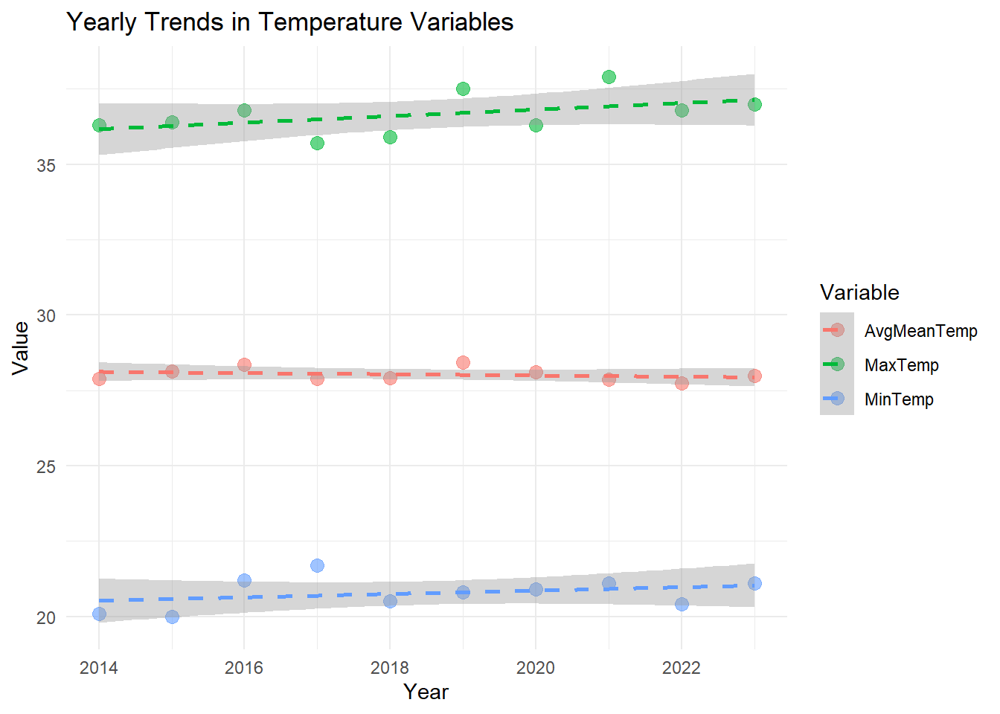
ggplot(combined_Yearly_data, aes(x = Year, y = MaxTemp)) +
geom_point(alpha = 0.6, size = 3) + # Scatter plot points
geom_smooth(method = "lm", linetype = "dashed", size = 1) + # Linear trend line
labs(
title = "Yearly Trends in Max Temperature",
x = "Year",
y = "Max Temp"
) +
theme_minimal()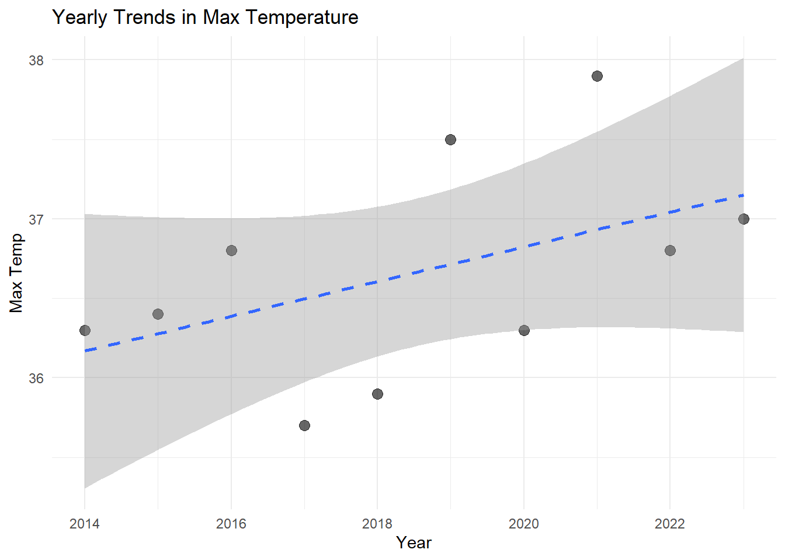
ggplot(combined_Yearly_data, aes(x = Year, y = DaysAbove35)) +
geom_point(alpha = 0.6, size = 3) + # Scatter plot points
geom_smooth(method = "lm", linetype = "dashed", size = 1) +
labs(
title = "Yearly Trends in No. of days above 35",
x = "Year",
y = "Days Above 35 degree"
) +
theme_minimal()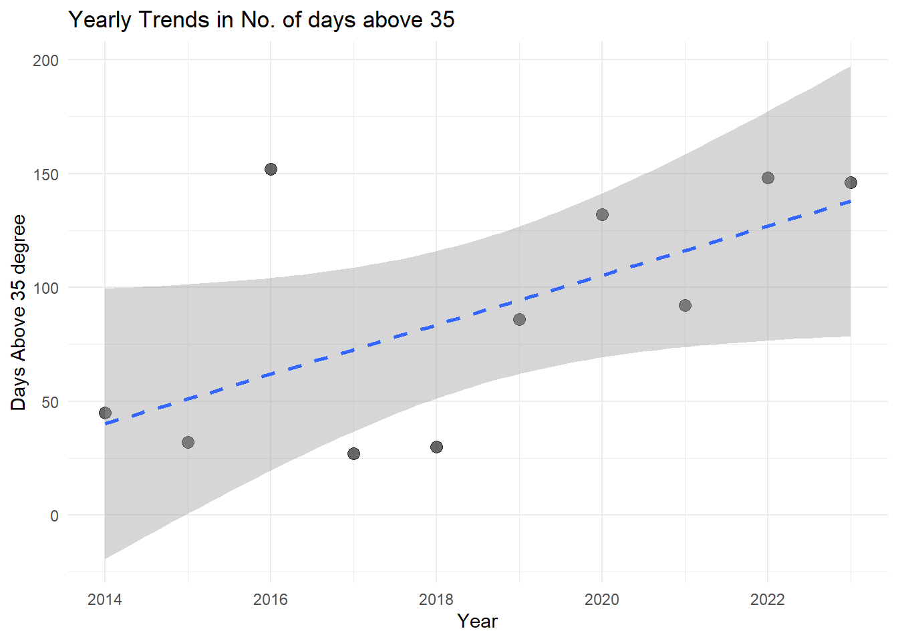
Yearly Trends on Rainfall
ggplot(combined_Yearly_data, aes(x = Year, y = total_rainfall)) +
geom_point(alpha = 0.6, size = 3) + # Scatter plot points
geom_smooth(method = "lm", linetype = "dashed", size = 1) +
labs(
title = "Yearly Trends in Total Rainfall",
x = "Year",
y = "Total Rainfall (mm)"
) +
theme_minimal()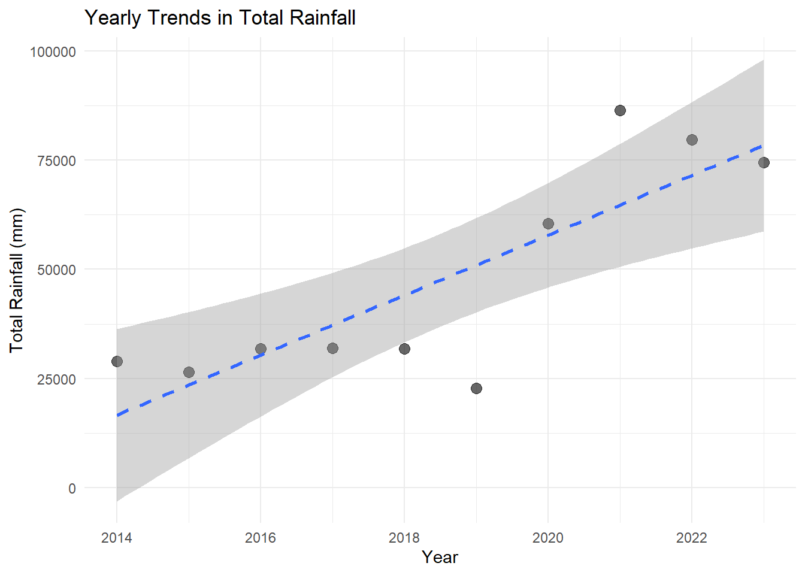
ggplot(combined_Yearly_data, aes(x = Year, y = Highest30minRainfall)) +
geom_point(alpha = 0.6, size = 3) +
geom_smooth(method = "lm", linetype = "dashed", size = 1) +
labs(
title = "Yearly Trends in Highest Rainfall in 30 minutes",
x = "Year",
y = "Highest 30 min Rainfall"
) +
theme_minimal()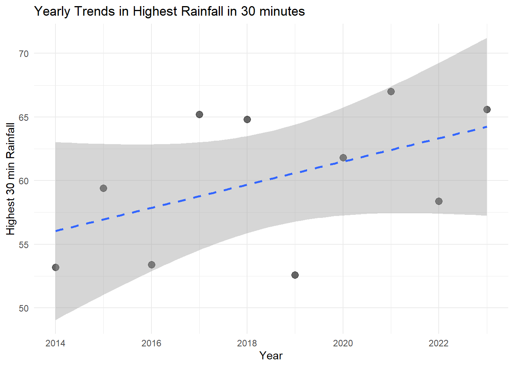
ggplot(combined_Yearly_data, aes(x = Year, y = dengueincidencerate)) +
geom_point(alpha = 0.6, size = 3) +
geom_smooth(method = "lm", linetype = "dashed", size = 1) +
labs(
title = "Yearly Trends in Dengue Incidence Rate",
x = "Year",
y = " Dengue Incidence Rate"
) +
theme_minimal()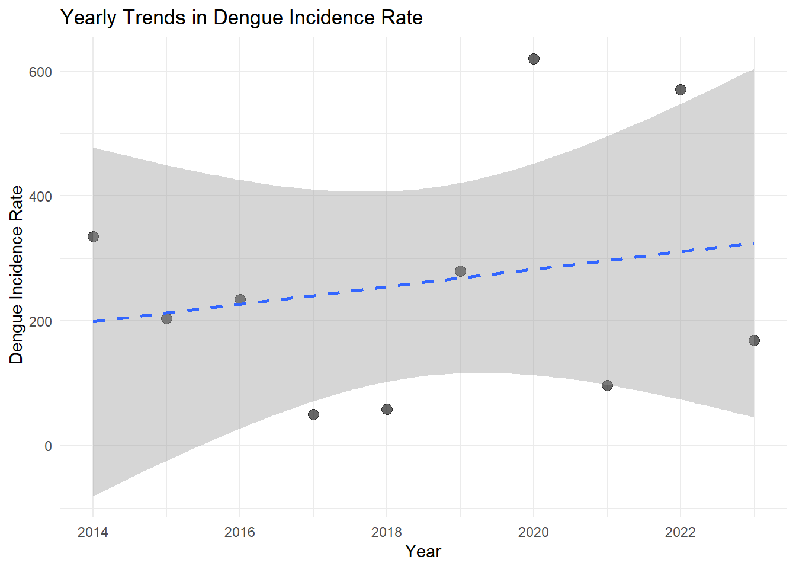
ggplot(combined_Yearly_data, aes(x = Year, y = Yearly_Elec_consump)) +
geom_point(alpha = 0.6, size = 3) +
geom_smooth(method = "lm", linetype = "dashed", size = 1) +
labs(
title = "Yearly Trends in Electricity Consumption",
x = "Year",
y = " Total Yearly dElectricity Consumption"
) +
theme_minimal()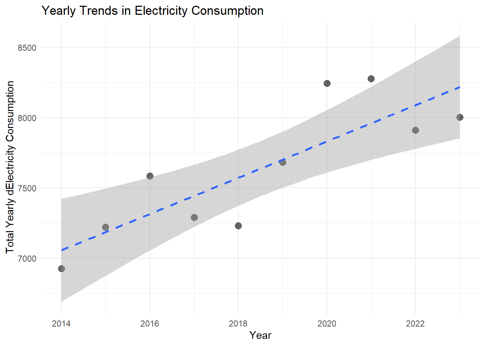
ggplot(combined_Yearly_data, aes(x = Year, y = DaysAbove35)) +
geom_point(alpha = 0.6, size = 3) +
geom_smooth(method = "lm", linetype = "dashed", size = 1) +
labs(
title = "Yearly Trends in DaysAbove35",
x = "Year",
y = " Total No. of days above 35 Degree"
) +
theme_minimal()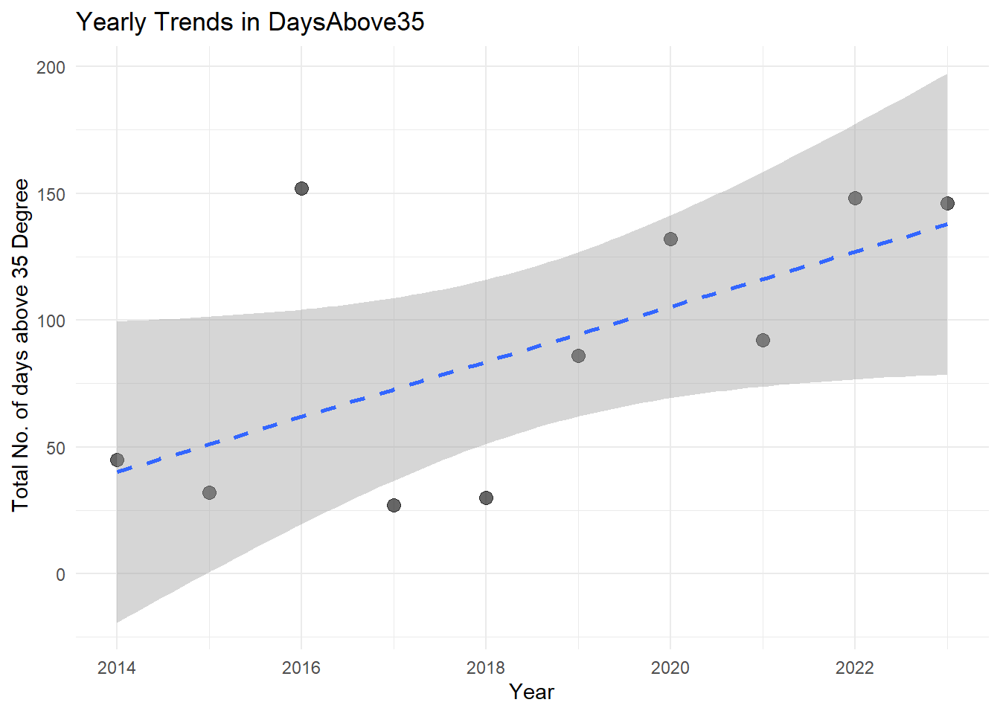
Distribution of of the data
Histograms
long_data <- combined_Monthly_data %>%
pivot_longer(cols = where(is.numeric), names_to = "Variable", values_to = "Value")
# Create faceted histogram for all continuous variables
ggplot(long_data, aes(x = Value)) +
geom_histogram(binwidth =1, fill = "lightblue", color = "black", alpha = 0.7) +
theme_minimal() +
facet_wrap(~ Variable, scales = "free") +
labs(title = "Histograms of All Continuous Variables", x = "Value", y = "Frequency")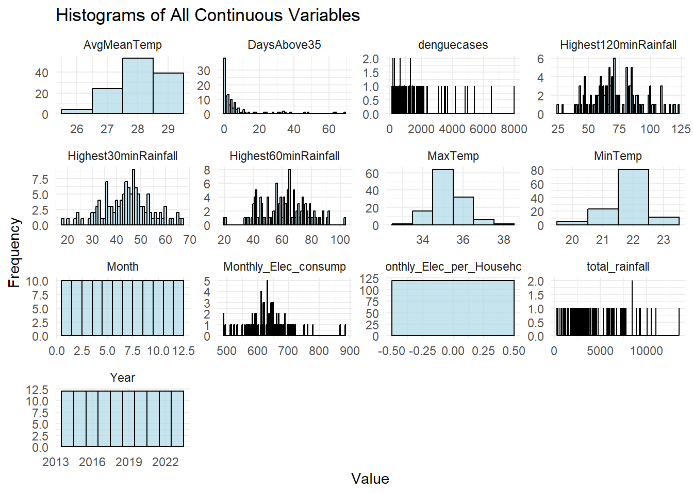
ggplot(combined_Monthly_data, aes(x = total_rainfall)) +
geom_histogram(aes(y = ..density..), bins = 30, fill = "lightblue", color = "black", alpha = 0.7) +
stat_function(fun = dnorm, args = list(mean = mean(combined_Monthly_data$total_rainfall, na.rm = TRUE),
sd = sd(combined_Monthly_data$total_rainfall, na.rm = TRUE)),
color = "red", size = 1) +
labs(title = "Histogram with Normal Curve", x = "Total Rainfall", y = "Density") +
theme_minimal()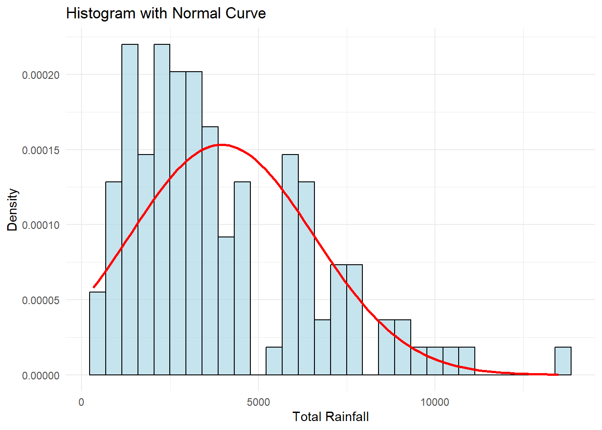
ggplot(combined_Monthly_data, aes(x = Highest30minRainfall)) +
geom_histogram(aes(y = ..density..), bins = 30, fill = "lightblue", color = "black", alpha = 0.7) +
stat_function(fun = dnorm, args = list(mean = mean(combined_Monthly_data$Highest30minRainfall, na.rm = TRUE),
sd = sd(combined_Monthly_data$Highest30minRainfall
, na.rm = TRUE)),
color = "red", size = 1) +
labs(title = "Histogram with Normal Curve", x = "Highest 30min Rainfall", y = "Density") +
theme_minimal()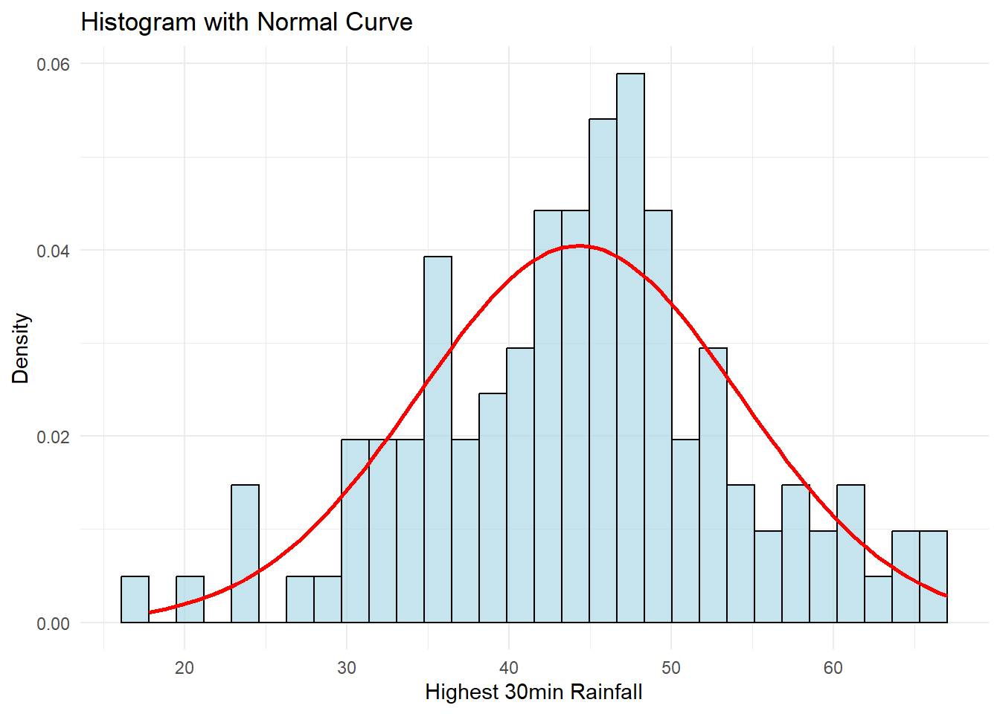
ggplot(combined_Monthly_data, aes(x = Highest60minRainfall)) +
geom_histogram(aes(y = ..density..), bins = 30, fill = "lightblue", color = "black", alpha = 0.7) +
stat_function(fun = dnorm, args = list(mean = mean(combined_Monthly_data$Highest60minRainfall, na.rm = TRUE),
sd = sd(combined_Monthly_data$Highest60minRainfall, na.rm = TRUE)),
color = "red", size = 1) +
labs(title = "Histogram with Normal Curve", x = "Highest 60min Rainfall", y = "Density") +
theme_minimal()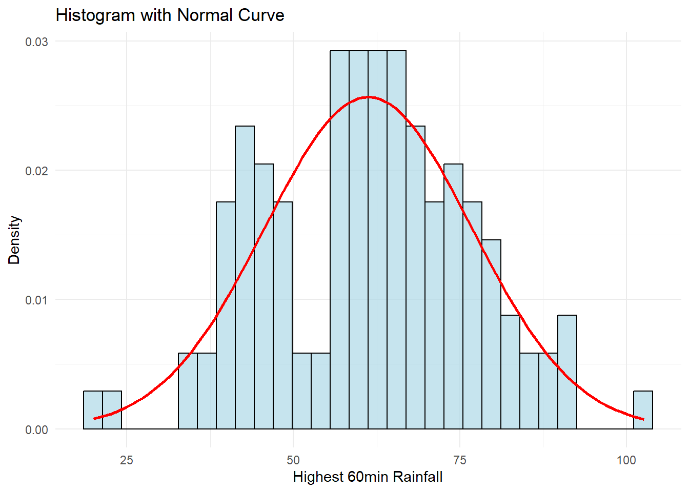
ggplot(combined_Monthly_data, aes(x = Highest120minRainfall)) +
geom_histogram(aes(y = ..density..), bins = 30, fill = "lightblue", color = "black", alpha = 0.7) +
stat_function(fun = dnorm, args = list(mean = mean(combined_Monthly_data$Highest120minRainfall, na.rm = TRUE),
sd = sd(combined_Monthly_data$Highest120minRainfall, na.rm = TRUE)),
color = "red", size = 1) +
labs(title = "Histogram with Normal Curve", x = "Highest 120min Rainfall", y = "Density") +
theme_minimal()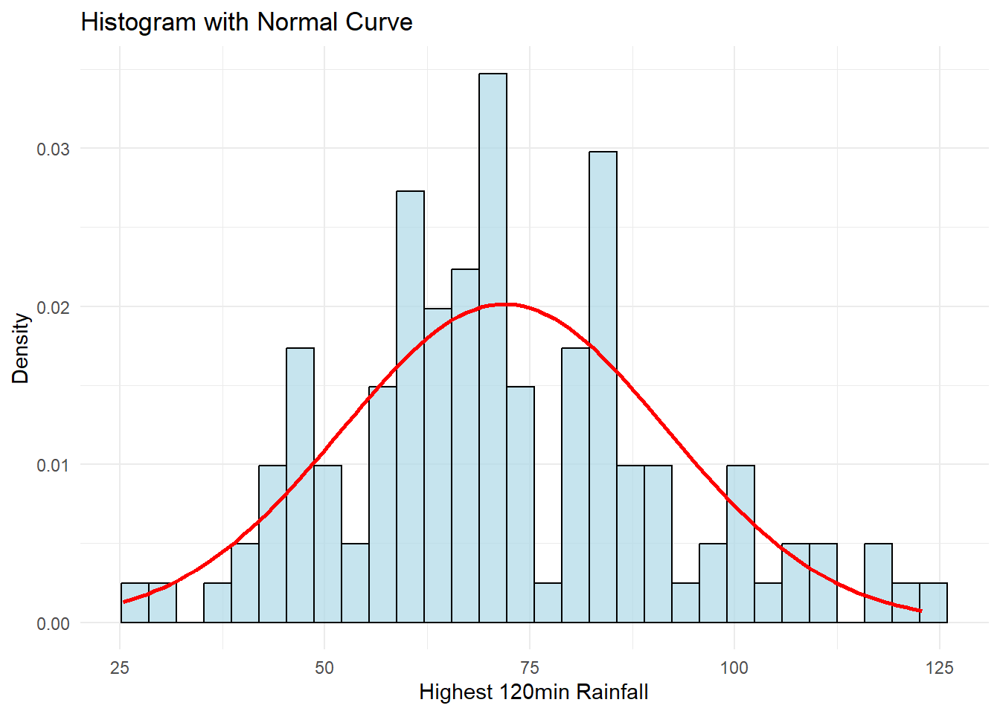
ggplot(combined_Monthly_data, aes(x = Monthly_Elec_consump)) +
geom_histogram(aes(y = ..density..), bins = 30, fill = "lightblue", color = "black", alpha = 0.7) +
stat_function(fun = dnorm, args = list(mean = mean(combined_Monthly_data$Monthly_Elec_consump, na.rm = TRUE),
sd = sd(combined_Monthly_data$Monthly_Elec_consump, na.rm = TRUE)),
color = "red", size = 1) +
labs(title = "Histogram with Normal Curve", x = "Monthly Electricity Consumption", y = "Density") +
theme_minimal()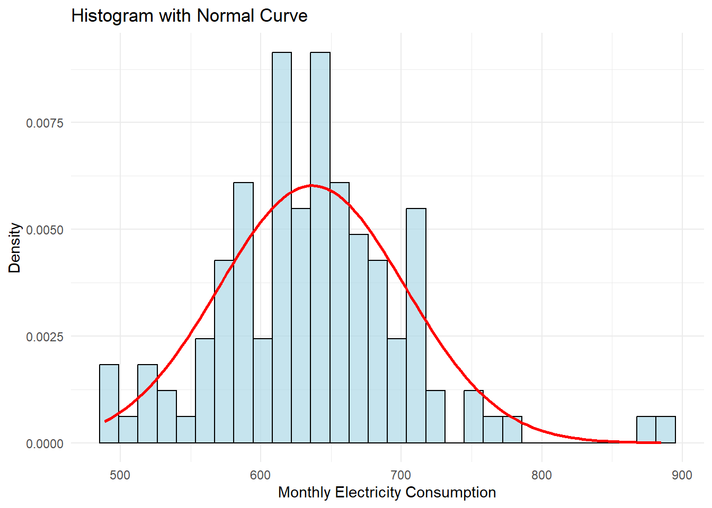
ggplot(combined_Monthly_data, aes(x = denguecases)) +
geom_histogram(aes(y = ..density..), bins = 30, fill = "lightblue", color = "black", alpha = 0.7) +
stat_function(fun = dnorm, args = list(mean = mean(combined_Monthly_data$denguecases, na.rm = TRUE),
sd = sd(combined_Monthly_data$denguecases, na.rm = TRUE)),
color = "red", size = 1) +
labs(title = "Histogram with Normal Curve", x = "Dengue cases", y = "Density") +
theme_minimal()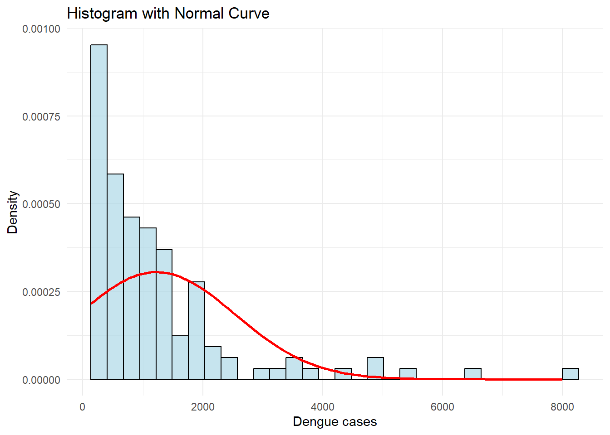
summary (combined_Monthly_data) Month Year denguecases AvgMeanTemp
Min. : 1.00 Min. :2014 Min. : 136.0 Min. :25.94
1st Qu.: 3.75 1st Qu.:2016 1st Qu.: 399.8 1st Qu.:27.55
Median : 6.50 Median :2018 Median : 890.0 Median :28.13
Mean : 6.50 Mean :2018 Mean :1228.4 Mean :28.02
3rd Qu.: 9.25 3rd Qu.:2021 3rd Qu.:1447.2 3rd Qu.:28.56
Max. :12.00 Max. :2023 Max. :8001.0 Max. :29.25
MaxTemp MinTemp total_rainfall Highest30minRainfall
Min. :33.30 Min. :20.0 Min. : 330 Min. :17.80
1st Qu.:34.80 1st Qu.:21.6 1st Qu.: 2035 1st Qu.:37.70
Median :35.40 Median :22.0 Median : 3202 Median :44.80
Mean :35.33 Mean :21.9 Mean : 3960 Mean :44.28
3rd Qu.:35.70 3rd Qu.:22.3 3rd Qu.: 5830 3rd Qu.:49.65
Max. :37.90 Max. :23.4 Max. :13505 Max. :67.00
Highest60minRainfall Highest120minRainfall DaysAbove35
Min. : 20.00 Min. : 25.40 Min. : 0.000
1st Qu.: 49.60 1st Qu.: 59.35 1st Qu.: 0.000
Median : 62.70 Median : 69.60 Median : 2.000
Mean : 61.22 Mean : 71.89 Mean : 7.417
3rd Qu.: 71.85 3rd Qu.: 84.45 3rd Qu.: 6.000
Max. :102.60 Max. :122.80 Max. :69.000
Monthly_Elec_consump Monthly_Elec_per_Household
Min. :488.7 Min. :0.0003859
1st Qu.:594.1 1st Qu.:0.0004514
Median :635.6 Median :0.0004821
Mean :636.4 Mean :0.0004800
3rd Qu.:671.1 3rd Qu.:0.0005080
Max. :885.0 Max. :0.0006448 Correlation between the various variables.
ggstatsplot::ggcorrmat(
data = combined_Monthly_data,
cor.vars = 3:13)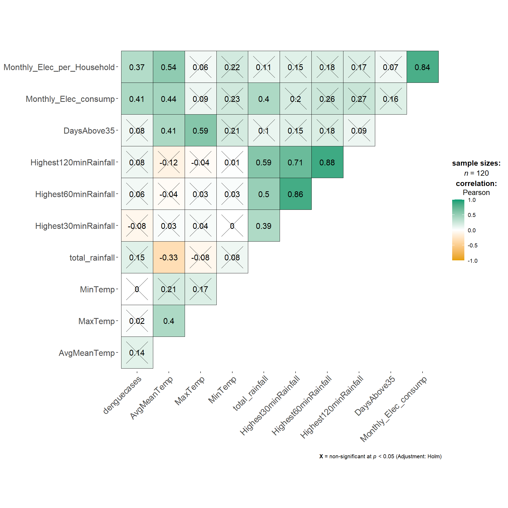
ggstatsplot::ggcorrmat(
data = combined_Yearly_data,
cor.vars = 2:13)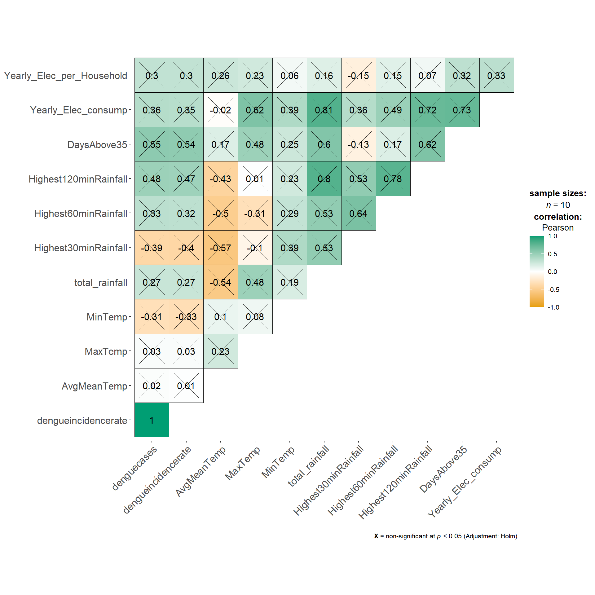
Note
Based on the correlation plot, it is noted for the yearly data there is no correlation between the yearly data across all variables.
Distribution of the data
Ridge lines of variables
combined_Monthly_data$Year <- as.factor(combined_Monthly_data$Year)
ggplot(combined_Monthly_data,
aes(x = AvgMeanTemp,
y = Year)) + # Ensure 'Year' is correctly mapped to y-axis
geom_density_ridges(
scale = 3,
rel_min_height = 0.01,
bandwidth = 3.4,
fill = lighten("#7097BB", 0.3), # Adjust fill color
color = "white"
) +
scale_x_continuous(
name = "Monthly Mean Temperature",
expand = c(0, 0)
) +
scale_y_discrete(
name = NULL,
expand = expansion(add = c(0.2, 2.6))
) +
theme_ridges()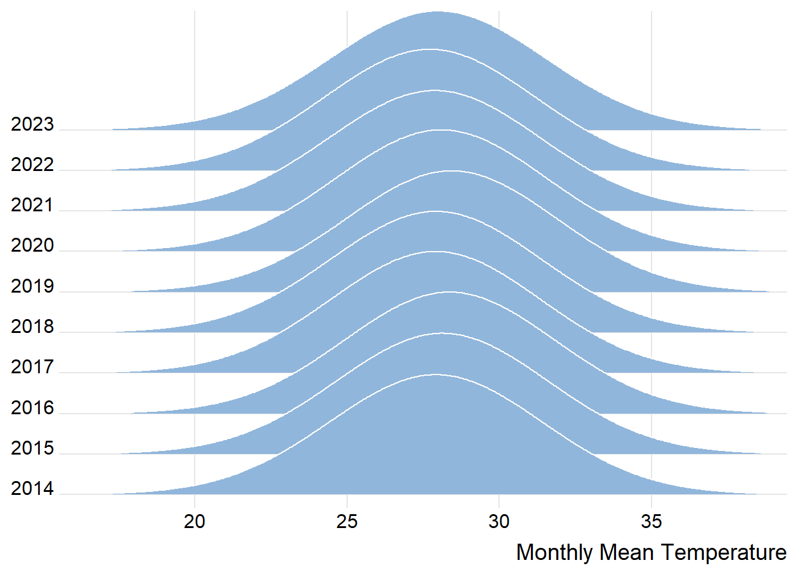
# Perform both Shapiro-Wilk and Anderson-Darling tests for each year
normality_results <- combined_Monthly_data %>%
group_by(Year) %>%
summarise(
Shapiro_p = shapiro.test(AvgMeanTemp)$p.value, # Shapiro-Wilk test p-value
Anderson_p = ad.test(AvgMeanTemp)$p.value # Anderson-Darling test p-value
) %>%
mutate(
Shapiro_Result = ifelse(Shapiro_p > 0.05, "Normal", "Not Normal"), # Interpretation
Anderson_Result = ifelse(Anderson_p > 0.05, "Normal", "Not Normal") # Interpretation
)
# View combined results
print(normality_results)# A tibble: 10 × 5
Year Shapiro_p Anderson_p Shapiro_Result Anderson_Result
<fct> <dbl> <dbl> <chr> <chr>
1 2014 0.753 0.690 Normal Normal
2 2015 0.274 0.358 Normal Normal
3 2016 0.408 0.529 Normal Normal
4 2017 0.200 0.179 Normal Normal
5 2018 0.156 0.266 Normal Normal
6 2019 0.0745 0.137 Normal Normal
7 2020 0.953 0.920 Normal Normal
8 2021 0.0612 0.127 Normal Normal
9 2022 0.889 0.637 Normal Normal
10 2023 0.130 0.102 Normal Normal ggplot(combined_Monthly_data,
aes(x = MaxTemp,
y = Year)) +
geom_density_ridges(
scale = 3,
rel_min_height = 0.01,
bandwidth = 3.4,
fill = lighten("#7097BB", 0.3),
color = "white"
) +
scale_x_continuous(
name = "Monthly Max Temperature",
expand = c(0, 0)
) +
scale_y_discrete(
name = NULL,
expand = expansion(add = c(0.2, 2.6))
) +
theme_ridges()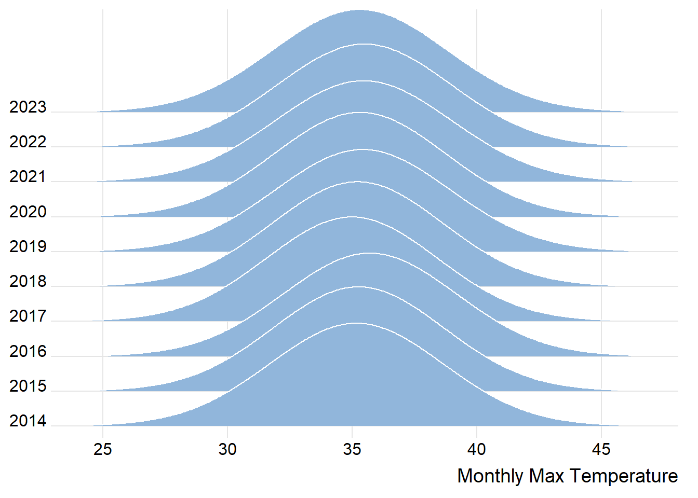
# Perform both Shapiro-Wilk and Anderson-Darling tests for each year
normality_results <- combined_Monthly_data %>%
group_by(Year) %>%
summarise(
Shapiro_p = shapiro.test(MaxTemp)$p.value, # Shapiro-Wilk test p-value
Anderson_p = ad.test(MaxTemp)$p.value # Anderson-Darling test p-value
) %>%
mutate(
Shapiro_Result = ifelse(Shapiro_p > 0.05, "Normal", "Not Normal"), # Interpretation
Anderson_Result = ifelse(Anderson_p > 0.05, "Normal", "Not Normal") # Interpretation
)
# View combined results
print(normality_results)# A tibble: 10 × 5
Year Shapiro_p Anderson_p Shapiro_Result Anderson_Result
<fct> <dbl> <dbl> <chr> <chr>
1 2014 0.770 0.763 Normal Normal
2 2015 0.499 0.388 Normal Normal
3 2016 0.696 0.579 Normal Normal
4 2017 0.915 0.936 Normal Normal
5 2018 0.988 0.927 Normal Normal
6 2019 0.530 0.353 Normal Normal
7 2020 0.878 0.837 Normal Normal
8 2021 0.300 0.127 Normal Normal
9 2022 0.801 0.808 Normal Normal
10 2023 0.469 0.403 Normal Normal ggplot(combined_Monthly_data,
aes(x = MinTemp,
y = Year)) +
geom_density_ridges(
scale = 3,
rel_min_height = 0.01,
bandwidth = 3.4,
fill = lighten("#7097BB", 0.3),
color = "white"
) +
scale_x_continuous(
name = "Monthly Min Temperature",
expand = c(0, 0)
) +
scale_y_discrete(
name = NULL,
expand = expansion(add = c(0.2, 2.6))
) +
theme_ridges()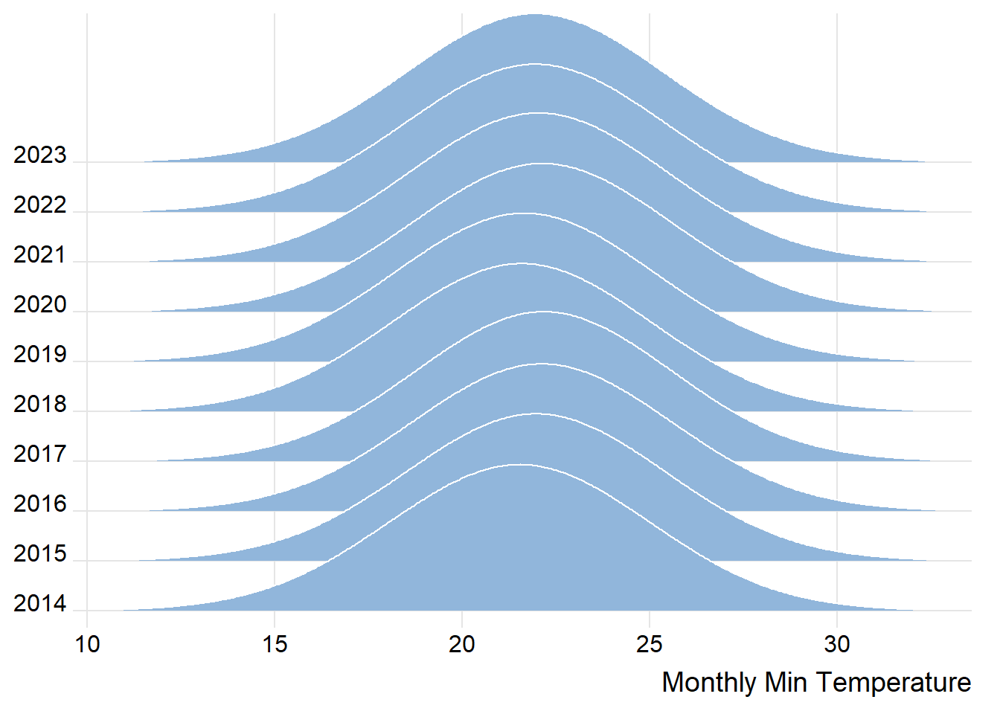
# Perform both Shapiro-Wilk and Anderson-Darling tests for each year
normality_results <- combined_Monthly_data %>%
group_by(Year) %>%
summarise(
Shapiro_p = shapiro.test(MinTemp)$p.value, # Shapiro-Wilk test p-value
Anderson_p = ad.test(MinTemp)$p.value # Anderson-Darling test p-value
) %>%
mutate(
Shapiro_Result = ifelse(Shapiro_p > 0.05, "Normal", "Not Normal"), # Interpretation
Anderson_Result = ifelse(Anderson_p > 0.05, "Normal", "Not Normal") # Interpretation
)
# View combined results
print(normality_results)# A tibble: 10 × 5
Year Shapiro_p Anderson_p Shapiro_Result Anderson_Result
<fct> <dbl> <dbl> <chr> <chr>
1 2014 0.0432 0.0659 Not Normal Normal
2 2015 0.0151 0.0400 Not Normal Not Normal
3 2016 0.379 0.384 Normal Normal
4 2017 0.0836 0.125 Normal Normal
5 2018 0.634 0.673 Normal Normal
6 2019 0.644 0.586 Normal Normal
7 2020 0.330 0.361 Normal Normal
8 2021 0.976 0.848 Normal Normal
9 2022 0.217 0.135 Normal Normal
10 2023 0.835 0.887 Normal Normal Analysis of Variance: Parametric and Non-Parametric Methods
combined_Monthly_data$total_rainfall <- as.numeric(combined_Monthly_data$total_rainfall)
combined_Monthly_data <- combined_Monthly_data %>%
filter(!is.na(total_rainfall))ggbetweenstats(
data = combined_Monthly_data,
x = Year,
y = total_rainfall,
type = "np", # Non-Parametric ANOVA, Parameteric - p
mean.ci = TRUE, # Display mean and confidence interval
pairwise.comparisons = TRUE, # Perform pairwise tests
pairwise.display = "significant", # Show only significant pairs
p.adjust.method = "fdr", # Adjust for multiple comparisons
messages = FALSE # Suppress additional messages
)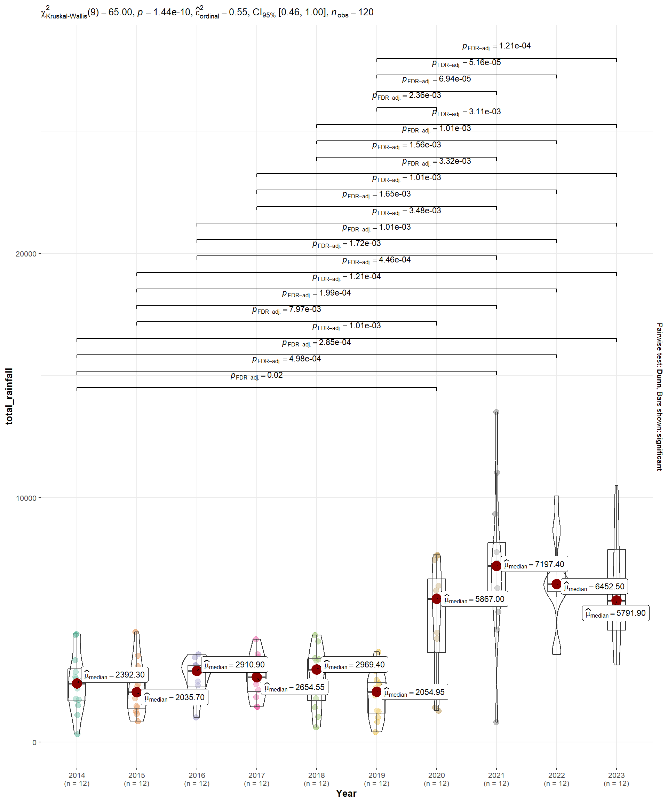
ggbetweenstats(
data = combined_Monthly_data,
x = Year,
y = total_rainfall,
type = "np", # Non-Parametric ANOVA, Parameteric - p
mean.ci = TRUE, # Display mean and confidence interval
pairwise.comparisons = TRUE, # Perform pairwise tests
pairwise.display = "significant", # Show only significant pairs
p.adjust.method = "fdr", # Adjust for multiple comparisons
messages = FALSE # Suppress additional messages
)ggbetweenstats(
data = combined_Monthly_data,
x = Year,
y = total_rainfall,
type = "np", # Non-Parametric ANOVA, Parameteric - p
mean.ci = TRUE, # Display mean and confidence interval
pairwise.comparisons = FALSE, # Perform pairwise tests
pairwise.display = "none",
messages = FALSE # Suppress additional messages
)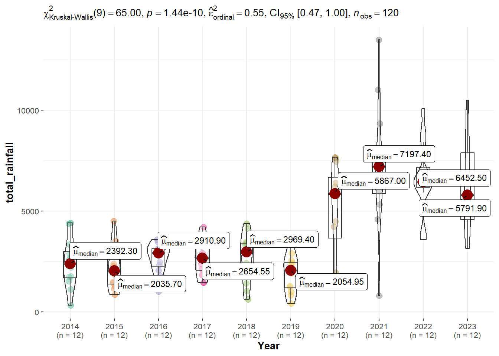
ggbetweenstats(
data = combined_Monthly_data,
x = Year,
y = MaxTemp,
type = "p", # Non-Parametric ANOVA, Parameteric - p
mean.ci = TRUE, # Display mean and confidence interval
pairwise.comparisons = TRUE, # Perform pairwise tests
pairwise.display = "significant", # Show only significant pairs
p.adjust.method = "fdr", # Adjust for multiple comparisons
messages = FALSE # Suppress additional messages
)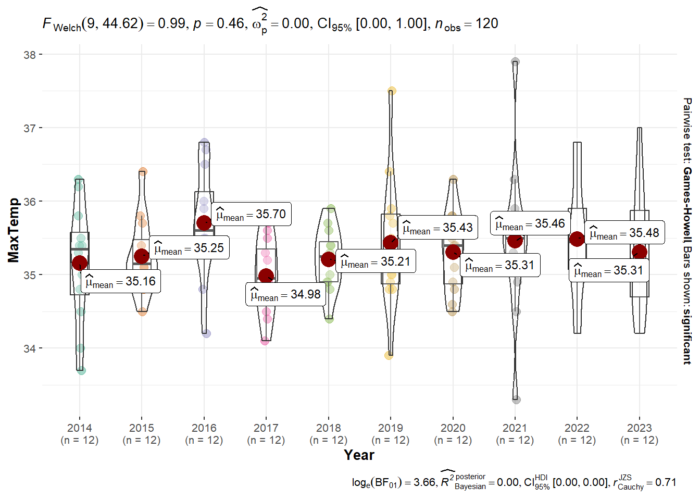
ggbetweenstats(
data = combined_Monthly_data,
x = Year,
y = DaysAbove35,
type = "np", # Non-Parametric ANOVA, Parameteric - p
mean.ci = TRUE, # Display mean and confidence interval
pairwise.comparisons = TRUE, # Perform pairwise tests
pairwise.display = "significant", # Show only significant pairs
p.adjust.method = "fdr", # Adjust for multiple comparisons
messages = FALSE # Suppress additional messages
)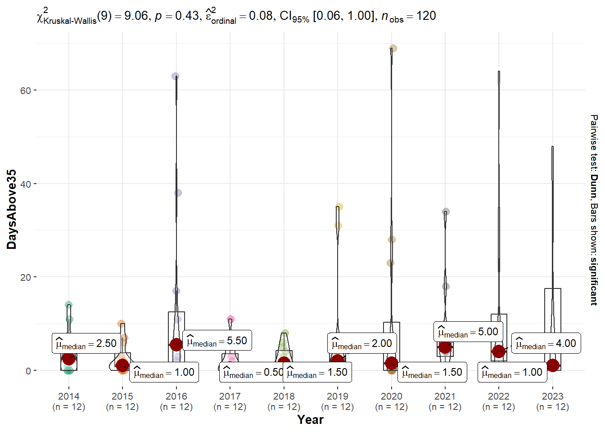
ggbetweenstats(
data = combined_Monthly_data,
x = Year,
y = AvgMeanTemp,
type = "p", # Non-Parametric ANOVA, Parameteric - p
mean.ci = TRUE, # Display mean and confidence interval
pairwise.comparisons = TRUE, # Perform pairwise tests
pairwise.display = "significant", # Show only significant pairs
p.adjust.method = "fdr", # Adjust for multiple comparisons
messages = FALSE # Suppress additional messages
)
ggbetweenstats(
data = combined_Monthly_data,
x = Year,
y = denguecases ,
type = "Np", # Non-Parametric ANOVA, Parameteric - p
mean.ci = TRUE, # Display mean and confidence interval
pairwise.comparisons = TRUE, # Perform pairwise tests
pairwise.display = "significant", # Show only significant pairs
p.adjust.method = "fdr", # Adjust for multiple comparisons
messages = FALSE # Suppress additional messages
)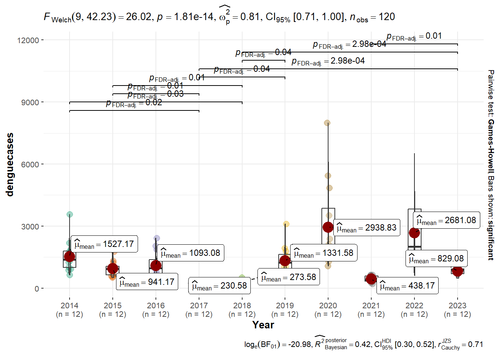
ggbetweenstats(
data = combined_Monthly_data,
x = Year,
y = denguecases ,
type = "Np", # Non-Parametric ANOVA, Parameteric - p
mean.ci = TRUE, # Display mean and confidence interval
pairwise.comparisons = FALSE, # Perform pairwise tests
pairwise.display = "none",
messages = FALSE # Suppress additional messages
)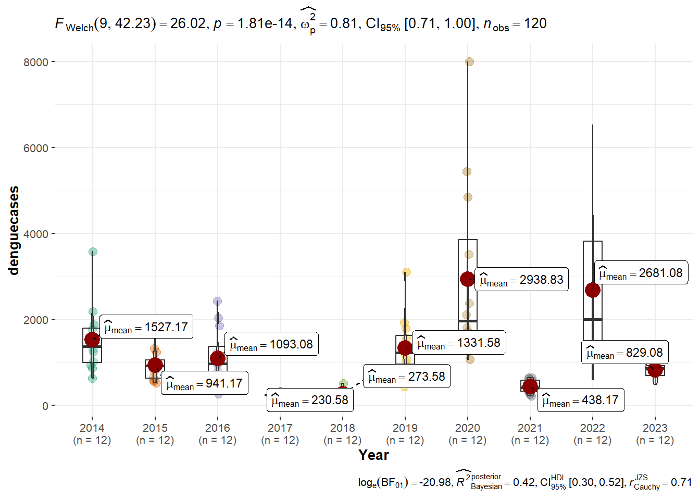
ggbetweenstats(
data = combined_Monthly_data,
x = Year,
y = Monthly_Elec_consump,
type = "np", # Non-Parametric ANOVA, Parameteric - p
mean.ci = TRUE, # Display mean and confidence interval
pairwise.comparisons = TRUE, # Perform pairwise tests
pairwise.display = "significant", # Show only significant pairs
p.adjust.method = "fdr", # Adjust for multiple comparisons
messages = FALSE # Suppress additional messages
)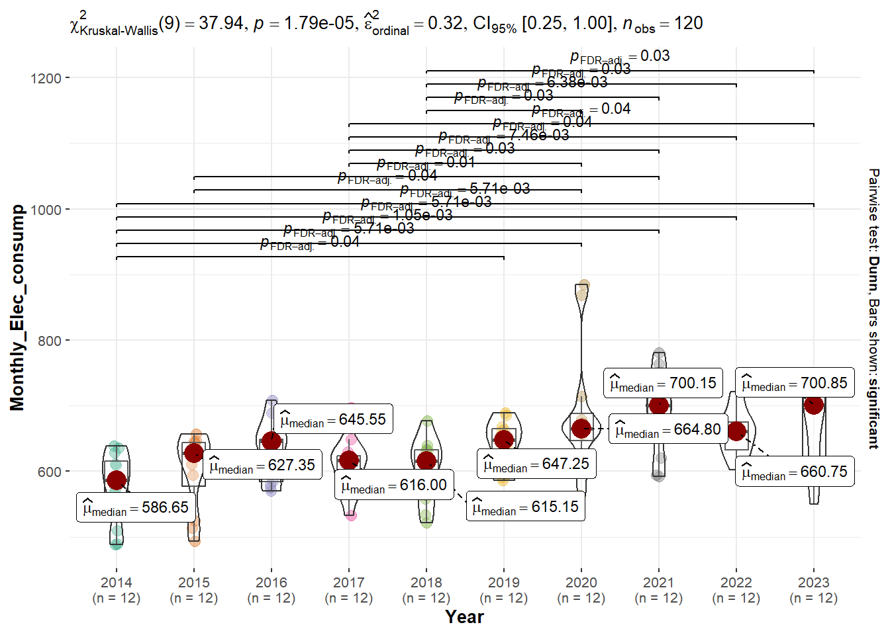
ggbetweenstats(
data = combined_Monthly_data,
x = Year,
y = Monthly_Elec_consump ,
type = "Np", # Non-Parametric ANOVA, Parameteric - p
mean.ci = TRUE, # Display mean and confidence interval
pairwise.comparisons = FALSE, # Perform pairwise tests
pairwise.display = "none",
messages = FALSE # Suppress additional messages
)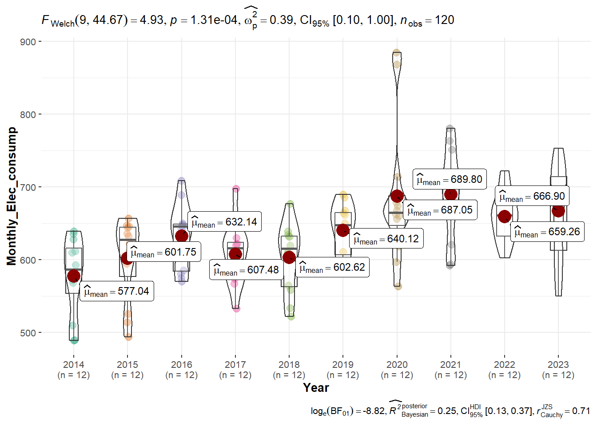
Multi-Linear Regression (MLR)
Using MLR to understand the impact of climate change on health aspect
colnames(combined_Monthly_data) [1] "Month" "Year"
[3] "denguecases" "AvgMeanTemp"
[5] "MaxTemp" "MinTemp"
[7] "total_rainfall" "Highest30minRainfall"
[9] "Highest60minRainfall" "Highest120minRainfall"
[11] "DaysAbove35" "Monthly_Elec_consump"
[13] "Monthly_Elec_per_Household"model_health <- lm(denguecases ~ MaxTemp + MinTemp + AvgMeanTemp+ Highest30minRainfall+ Highest60minRainfall + Highest120minRainfall+DaysAbove35 , data = combined_Monthly_data)
summary(model_health)
Call:
lm(formula = denguecases ~ MaxTemp + MinTemp + AvgMeanTemp +
Highest30minRainfall + Highest60minRainfall + Highest120minRainfall +
DaysAbove35, data = combined_Monthly_data)
Residuals:
Min 1Q Median 3Q Max
-1661.6 -764.4 -337.8 294.8 6276.8
Coefficients:
Estimate Std. Error t value Pr(>|t|)
(Intercept) -2316.449 8590.478 -0.270 0.78792
MaxTemp -118.360 199.650 -0.593 0.55449
MinTemp -103.999 194.272 -0.535 0.59349
AvgMeanTemp 371.417 186.449 1.992 0.04880 *
Highest30minRainfall -70.100 24.151 -2.903 0.00446 **
Highest60minRainfall 37.304 23.081 1.616 0.10886
Highest120minRainfall 5.405 13.007 0.416 0.67855
DaysAbove35 3.767 11.352 0.332 0.74063
---
Signif. codes: 0 '***' 0.001 '**' 0.01 '*' 0.05 '.' 0.1 ' ' 1
Residual standard error: 1275 on 112 degrees of freedom
Multiple R-squared: 0.1046, Adjusted R-squared: 0.04864
F-statistic: 1.869 on 7 and 112 DF, p-value: 0.08121check_collinearity(model_health)# Check for Multicollinearity
Low Correlation
Term VIF VIF 95% CI Increased SE Tolerance
MaxTemp 1.63 [1.35, 2.13] 1.27 0.62
MinTemp 1.07 [1.01, 1.94] 1.04 0.93
AvgMeanTemp 1.33 [1.14, 1.75] 1.15 0.75
Highest30minRainfall 4.15 [3.16, 5.61] 2.04 0.24
Highest120minRainfall 4.86 [3.67, 6.58] 2.20 0.21
DaysAbove35 1.74 [1.43, 2.28] 1.32 0.57
Tolerance 95% CI
[0.47, 0.74]
[0.52, 0.99]
[0.57, 0.88]
[0.18, 0.32]
[0.15, 0.27]
[0.44, 0.70]
Moderate Correlation
Term VIF VIF 95% CI Increased SE Tolerance
Highest60minRainfall 9.42 [6.96, 12.91] 3.07 0.11
Tolerance 95% CI
[0.08, 0.14]check_c_health <- check_collinearity(model_health)
plot(check_c_health)
Model Refinement
Highest Rainfall in 60 min data was removed due to multi-collinearity.
Based on the outcome of the initial model, it shows that the increase in dengue cases could not be explained by weather parameters. The correlation plot shows that dengue cases has correlation with electricity consumption.
Hence fo r model refinement, it is added to the model as a variable. The model become significant with highest 30 mins rainfall explaining the increasing trend dengue cases.
model_health <- lm(denguecases ~ MaxTemp + MinTemp + AvgMeanTemp+ Highest30minRainfall + Highest120minRainfall + Monthly_Elec_consump + DaysAbove35 , data = combined_Monthly_data)
summary(model_health)
Call:
lm(formula = denguecases ~ MaxTemp + MinTemp + AvgMeanTemp +
Highest30minRainfall + Highest120minRainfall + Monthly_Elec_consump +
DaysAbove35, data = combined_Monthly_data)
Residuals:
Min 1Q Median 3Q Max
-1874.8 -725.0 -145.9 490.2 5013.7
Coefficients:
Estimate Std. Error t value Pr(>|t|)
(Intercept) 5215.235 8170.506 0.638 0.5246
MaxTemp -55.516 186.527 -0.298 0.7665
MinTemp -223.714 183.207 -1.221 0.2246
AvgMeanTemp -69.709 198.007 -0.352 0.7255
Highest30minRainfall -37.981 15.931 -2.384 0.0188 *
Highest120minRainfall 9.539 8.397 1.136 0.2584
Monthly_Elec_consump 9.043 2.015 4.489 1.75e-05 ***
DaysAbove35 9.158 10.458 0.876 0.3831
---
Signif. codes: 0 '***' 0.001 '**' 0.01 '*' 0.05 '.' 0.1 ' ' 1
Residual standard error: 1187 on 112 degrees of freedom
Multiple R-squared: 0.2234, Adjusted R-squared: 0.1749
F-statistic: 4.603 on 7 and 112 DF, p-value: 0.0001488check_model(model_health)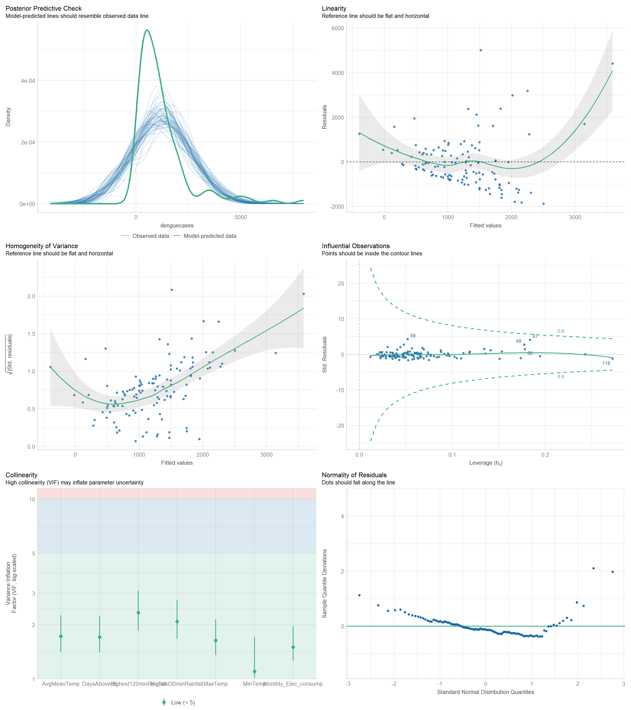
Using MLR to understand the impact of climate change on electricity consumption
model_elec <- lm(Monthly_Elec_consump ~ MaxTemp + MinTemp + AvgMeanTemp+ Highest30minRainfall+ Highest60minRainfall + Highest120minRainfall+DaysAbove35, data = combined_Monthly_data)
summary(model_elec)
Call:
lm(formula = Monthly_Elec_consump ~ MaxTemp + MinTemp + AvgMeanTemp +
Highest30minRainfall + Highest60minRainfall + Highest120minRainfall +
DaysAbove35, data = combined_Monthly_data)
Residuals:
Min 1Q Median 3Q Max
-117.907 -39.296 -5.111 25.925 231.190
Coefficients:
Estimate Std. Error t value Pr(>|t|)
(Intercept) -824.4679 375.1164 -2.198 0.0300 *
MaxTemp -7.4983 8.7180 -0.860 0.3916
MinTemp 14.9662 8.4832 1.764 0.0804 .
AvgMeanTemp 47.4653 8.1416 5.830 5.44e-08 ***
Highest30minRainfall -0.6925 1.0546 -0.657 0.5127
Highest60minRainfall 0.2618 1.0079 0.260 0.7955
Highest120minRainfall 1.1803 0.5680 2.078 0.0400 *
DaysAbove35 -0.2999 0.4957 -0.605 0.5464
---
Signif. codes: 0 '***' 0.001 '**' 0.01 '*' 0.05 '.' 0.1 ' ' 1
Residual standard error: 55.67 on 112 degrees of freedom
Multiple R-squared: 0.3345, Adjusted R-squared: 0.2929
F-statistic: 8.042 on 7 and 112 DF, p-value: 6.72e-08check_c_elec <- check_collinearity(model_elec)
plot(check_c_elec)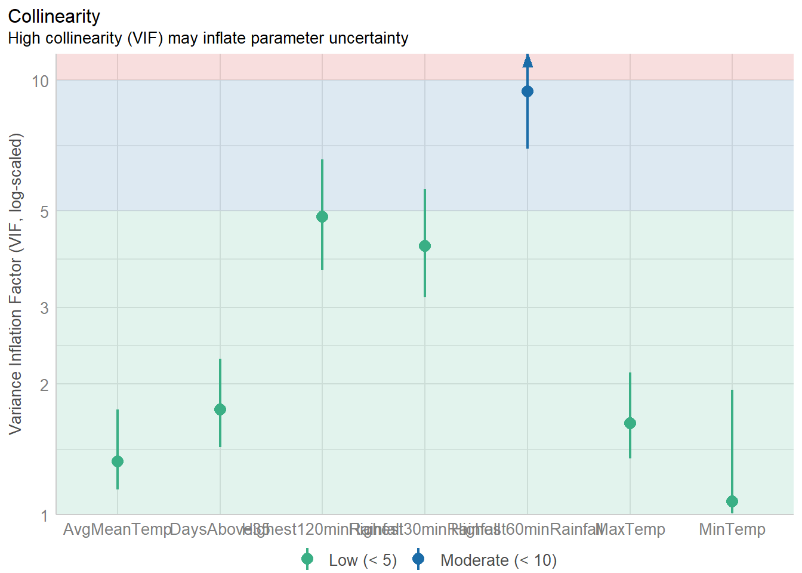
model_elec <- lm(Monthly_Elec_consump ~ MaxTemp + MinTemp + AvgMeanTemp+ Highest30minRainfall + Highest120minRainfall + DaysAbove35 , data = combined_Monthly_data)
summary(model_elec)
Call:
lm(formula = Monthly_Elec_consump ~ MaxTemp + MinTemp + AvgMeanTemp +
Highest30minRainfall + Highest120minRainfall + DaysAbove35,
data = combined_Monthly_data)
Residuals:
Min 1Q Median 3Q Max
-118.914 -39.111 -6.049 25.826 232.900
Coefficients:
Estimate Std. Error t value Pr(>|t|)
(Intercept) -823.8967 373.5590 -2.206 0.029441 *
MaxTemp -7.5354 8.6808 -0.868 0.387203
MinTemp 15.0833 8.4362 1.788 0.076468 .
AvgMeanTemp 47.3761 8.1007 5.848 4.91e-08 ***
Highest30minRainfall -0.4988 0.7424 -0.672 0.503054
Highest120minRainfall 1.2912 0.3728 3.463 0.000755 ***
DaysAbove35 -0.2799 0.4876 -0.574 0.567149
---
Signif. codes: 0 '***' 0.001 '**' 0.01 '*' 0.05 '.' 0.1 ' ' 1
Residual standard error: 55.44 on 113 degrees of freedom
Multiple R-squared: 0.3341, Adjusted R-squared: 0.2988
F-statistic: 9.45 on 6 and 113 DF, p-value: 2.118e-08check_model(model_elec)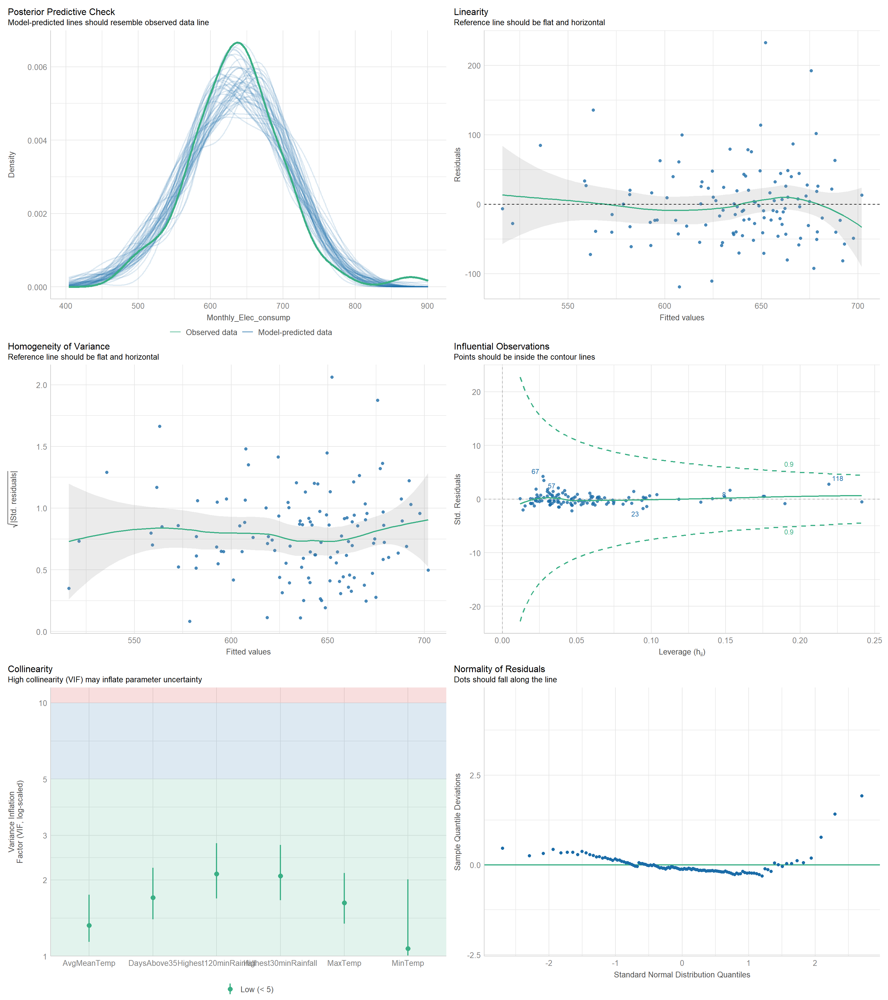
Conclusion and further visualization
Although the MLR models may not be able to explain fully on the increase in the dengue cases and household electricity consumption over the year using the weather parameters, but the MLR models met the requirements for this exercise. The use of MLR technique is to use the weather parameters to explore if there were trends between changing weather patterns and its impact on our daily life.
Climate Change on Health
Using the outcome of the 1st MLR model on health, although the P-value is at 0.05 which close to the conventional threshold of 0.05, this indicate the model is marginally significant, and suggest that the weather parameters used as a group does not provide a strong explanation of explaining the increase in dengue cases over the recent years.
However it is important to note that among the weather parameters, Average Mean Temperature for the month and the highest 30 min rainfall are statically significant in the first model and only the highest rainfall 30 minutes is still statically significant for explaining the dengue trend after adding in the monthly total electricity consumption.
ggplot(combined_Monthly_data, aes(x = AvgMeanTemp, y = denguecases)) +
geom_point(color = "blue", alpha = 0.6, size = 3) + # Scatter plot with points
geom_smooth(method = "lm", color = "red", linetype = "dashed") + # Linear trend line
labs(
title = "Relationship Between Dengue Cases \nand Average Mean Temperature ",
x = "Average Daily Mean Temperature (Monthly)",
y = "Dengue Cases"
) +
theme_minimal()
ggplot(combined_Monthly_data, aes(x = Highest30minRainfall, y = denguecases)) +
geom_point(color = "blue", alpha = 0.6, size = 3) + # Scatter plot with points
geom_smooth(method = "lm", color = "red", linetype = "dashed") + # Linear trend line
labs(
title = "Relationship Between Dengue Cases \nand Highest 30 min Rainfall ",
x = "Highest 30 min Rainfall",
y = "Dengue Cases"
) +
theme_minimal()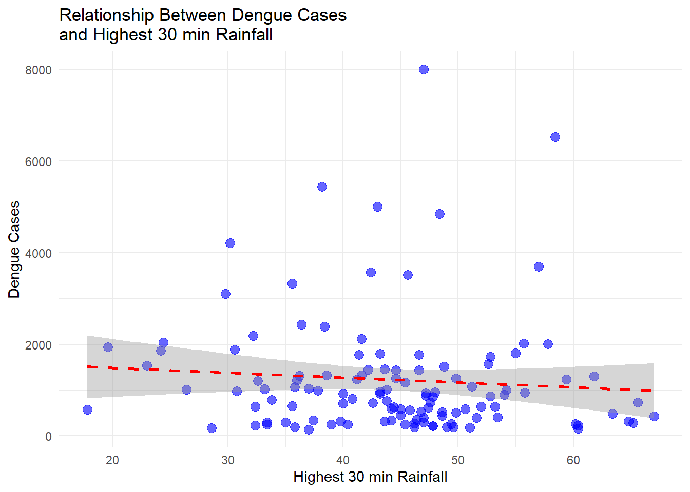
ggplot(combined_Monthly_data, aes(x = Monthly_Elec_consump, y = denguecases)) +
geom_point(color = "blue", alpha = 0.6, size = 3) + # Scatter plot with points
geom_smooth(method = "lm", color = "red", linetype = "dashed") + # Linear trend line
labs(
title = "Relationship Between Dengue Cases \nand Electricity Consumption",
x = "Monthly Household Electricity Consumption",
y = "Dengue Cases"
) +
theme_minimal()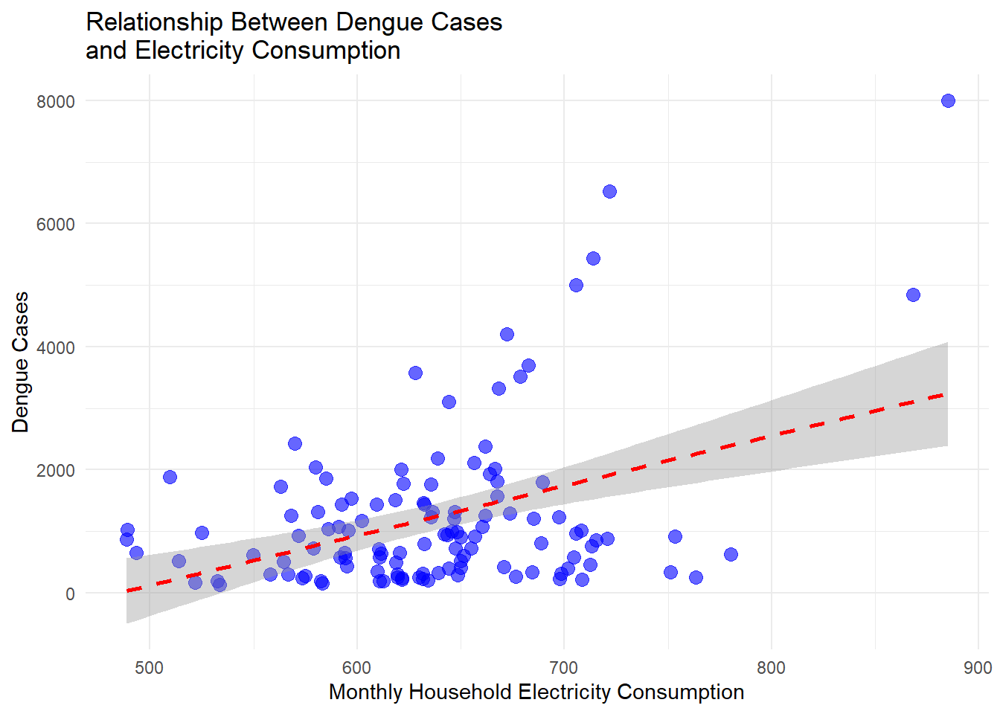
Climate Change on Electricity Consumption
Based on the MLR regression models built for the Household Electricity Consumption, the statistically significant variables are Average Mean Temperature, Highest 120 min Rainfall and Minimum Temperature. Hence the following visualization are used to show their relationship.
ggplot(combined_Monthly_data, aes(x = AvgMeanTemp, y = Monthly_Elec_consump)) +
geom_point(color = "blue", alpha = 0.6, size = 3) + # Scatter plot with points
geom_smooth(method = "lm", color = "red", linetype = "dashed") + # Linear trend line
labs(
title = "Relationship Between Electricity Consumption \nand Average Mean Temperature ",
x = "Average Daily Mean Temperature (Monthly)",
y = "Monthly Household Electricity Consumption"
) +
theme_minimal()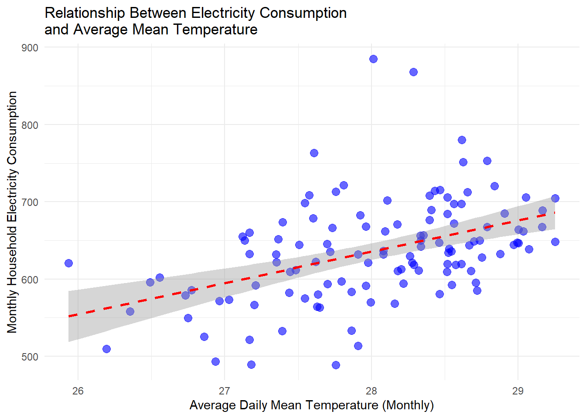
ggplot(combined_Monthly_data, aes(x = Highest120minRainfall, y = Monthly_Elec_consump)) +
geom_point(color = "blue", alpha = 0.6, size = 3) + # Scatter plot with points
geom_smooth(method = "lm", color = "red", linetype = "dashed") + # Linear trend line
labs(
title = "Relationship Between Electricity Consumption \nand Highest 120 min Rainfall",
x = "Highest 120 min Rainfall",
y = "Monthly Household Electricity Consumption"
) +
theme_minimal()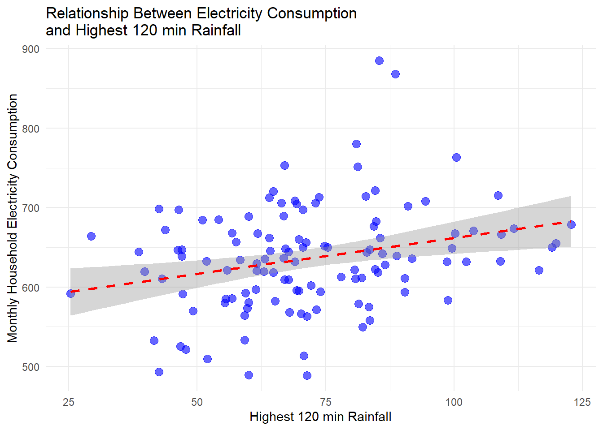
ggplot(combined_Monthly_data, aes(x = MinTemp, y = Monthly_Elec_consump)) +
geom_point(color = "blue", alpha = 0.6, size = 3) + # Scatter plot with points
geom_smooth(method = "lm", color = "red", linetype = "dashed") + # Linear trend line
labs(
title = "Relationship Between Electricity Consumption \nand Minimum Temperature",
x = "Minimum Temperature",
y = "Monthly Household Electricity Consumption"
) +
theme_minimal()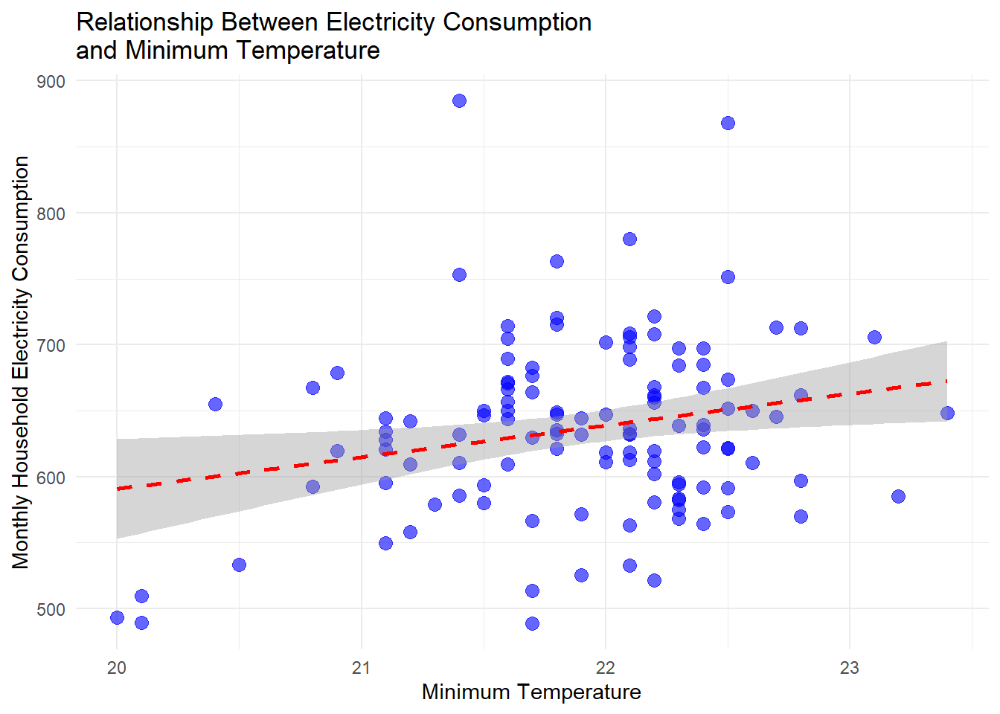
Disclaimer
This take home exercise was done with reference to methods in Prof Kam’s e textbook https://r4va.netlify.app/ , materials on R available online and the use of Microsoft co-pilot to troubleshoot syntax errors and streamline codes.